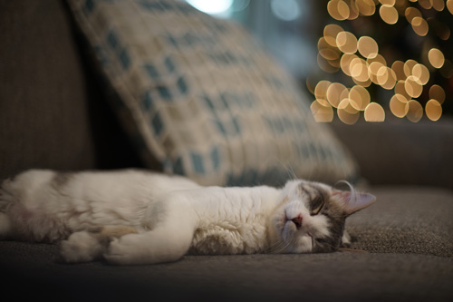

i am in baby kitten heaven. it is perfect. please enjoy these baby kitten photos as much as youd like
this lil boy is max
and his sister is macy! they are so cute
i got some amazing gifts this year *_* im not happy with how many i was able to churn out so im going to try (again) to start earlier next year. ryans mom loved the cats i made her and she almost cried! she requested ones of her 2 new kitties so i guess i better get to work
in absolutely no order:
thank you ryan ;____;
i am lucky enough to have all these games on the DS and now i am going to enjoy them all again on the switch! Thank you ryan1!!
cannot go wrong with more slippers!! this actually isnt true i have so many slippers but i always want more
i hate isabelle and tom nook now so i dont want their plushies but i did want their accessories for my US Navy pikachu. i hope these converse fit on his feet!
I dont like supporting an MLM but these always smell good
i am concerned about the longevity but i will wear it until it becomes matted
peter gave this to me! she has a cute outfit and a wistful look in her eyes
i said to ryan "all i want for christmas is chocolate" like 2 days ago and he made it happen
i have candy in this for now, but what will i put in it later??
it has a little tree on it and it is cute!
i honestly didnt know anyone made these
i saw blind bags at the store and got too excited about them so ryans mom bought me one! she somehow picked one with a rainbow unicorn inside but it smells good and i want to hug it anyway
the crowd screams "basic bitch" and i deserve it
Ben sent this all the way from Wisconsin for me!!!! how sweet! thank you ben!
i'm gonna try filming these. my last attempt wasnt perfect
i hope no one expects these to go on my fridge
i dont have anything to say about any of these!
round 2!!
hes cute!!!!
MORE chocolate???? i am so spoiled
one for me, one for ryan
i stole these from someone in the white elephant game
items forgotten for the photo
ryans brother got this in the white elephant game and they didnt fit him so he gave them to me
she fits perfectly on top of the jelly bean holder i bought for ryan
consignment shop finds!
not very big! just a doll sized seat ($30) and a longaberger basket ($5). the seat looks like it should fit SD sized dolls perfectly. the longaberger basket is so dirty but my mom wanted it so i grabbed it for her
i really cant wait for hina to come. hina pls. i hope she doesnt have to sit in the port until february
as for thrift stores, i found a PS2 memory card for $1.99 and a lil bub book for $1. i was going to give the book away as a white elephant gift but i looked at it too long and now i have to keep it. pic not related
i bought ni no kuni 2 on switch new for $20. ive heard mixed things about it but im willing to try it for this price. one friend says it was way worse than the first and the other says it was way better than the first. i cant tell which way it will go but i hope itll at least be interesting
i have 7 whole badges in shining pearl now. i'm going to beat it before starting anything else. i really like it so far even though the models can be a little story of seasons tier. theres a few issues but overall, its a true honest to god pokemon game, and thats more than i can say about the other recent releases.
i just found out about 13 sentinels coming to switch and i am a little confused tbh. the ps4 pro had some MAJOR slow down issues in one of the final battles in that game and i cant comprehend how a switch is going to handle that. i do want it on switch though... i might buy another copy if they release it over here (and it goes on sale). i really dont like playing games on the tv if you havent figured that out